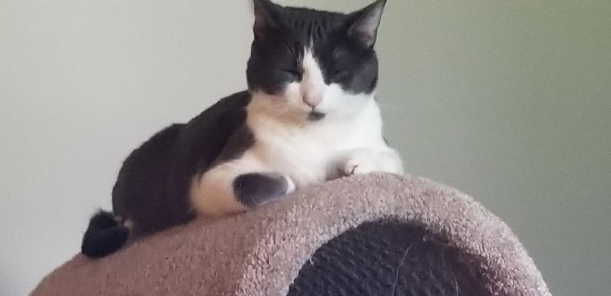

My husband (Ron) and I have four cats. The alpha of the group is Jade. We acquired Jade when he was 5 weeks old from a family member three years ago. Our second cat "Shadow" was adopted from Animal House Shelter two years ago. Shadow is the matriarch of our family. The last two kittens, Binky and Stripes who are brother and sister from the same litter were adopted last year from a co-worker looking for a good home for them. Even though they have been adopted at different times, they all have accepted each other as a part of the family. All of our cats love to snuggle when the weather gets colder so it can get a bit cozy with four cats in the bed with us. We had another furry family member,"George" a sixteen year old Chihuahua who passed earlier this year. Prior to his passing, he got along amazingly well with the cats as they would all snuggle together. They are our amazing fur babies and we would not trade them for the world. If you are looking for a pet, please consider adopting from a shelter. There are so many animals that need a loving home.
